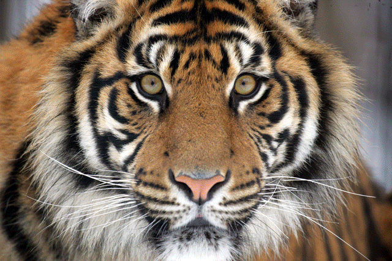

The Canisius
Ambassadors for Conservation are a group of college students dedicated to spreading a positive attitude about conservation to people around the world. To do this, we immerse ourselves in extensive field studies,then return home to serve as public educators at zoos, schools, and in our daily lives!